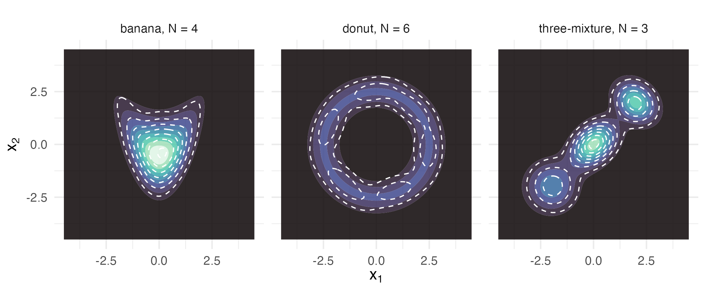

How well a mixture proxies four awkward shapes
Source:vignettes/articles/extended/density_shapes.Rmd
density_shapes.Rmd
has_ggplot2 <- requireNamespace("ggplot2", quietly = TRUE)The problem
Someone with a genuinely awkward target asks the question the routing table does not answer: my density is nothing like a Gaussian, and I can only evaluate it. Where does a mixture proxy actually work, and where does it stop? The regime is settled before the question is asked. What is not settled is whether the answer that comes back deserves to be used.
Package capabilities
Four bundled targets stand in for four kinds of awkwardness.
banana_target() is a Rosenbrock-style bent ridge, curved
but simply connected. donut_target() is a rotationally
symmetric annulus, whose modes form a continuous ring rather than a
finite set of points. mixture_target() is three
well-separated Gaussian components, which is awkward only in being
multimodal. epanechnikov_target() is compactly supported:
exactly zero outside a bounded interval, which no mixture of
full-support Gaussians can reproduce.
fit_kld_em() fits all four, through
fit_proxymix(regime = "kld"), by minimising the
Kullback-Leibler divergence from the target with the importance-sampled
expectation-maximisation iteration of van der Hoek and Elliott (2024).
Its proposal argument is what the fit feeds on, and
proposal_mvt() supplies the Student-t default. A target
that declares a support causes the fit to select a
support-matched proposal_uniform() instead, announced in a
message, because a Student-t would place draws where the target’s
log-density is minus infinity.
Four diagnostics grade the result. ess_summary() and the
fit’s own ess report how many of the importance draws are
effectively carrying the answer. The validation_kld
diagnostic is an importance-sampled estimate of
at the fitted parameters, taken on a fresh sample the fit did not use,
and validation_mc_se is its Monte Carlo standard error. The
kld_final diagnostic is the same estimate on the draws the
fit was tuned to, and it reads lower than the held-out value.
hellinger_mc() estimates the squared Hellinger distance
,
which lies in
when both densities are normalised. It draws fresh points from the fit
and returns the estimate with its Monte Carlo standard error.
gmm_fit_quality() carries the refusal contract. When the
importance sample collapses, the fit does not return a mixture that
looks ordinary and is worthless; under on_low_ess = "abort"
it raises a typed condition instead.
Addressing the problem
Fitting the three plane-supported shapes
Each target gets a Student-t proposal wide enough to cover it, and a component count chosen for its shape: four along the banana’s ridge, six around the donut’s ring, three for the three-mode mixture.
fit_b <- fit_proxymix(banana_target(), N = 4L, regime = "kld",
proposal = proposal_mvt(n_dim = 2L,
sigma = 4 * diag(2),
df = 5),
is_size = 3000L, max_iter = 50L, seed = 1L)
fit_d <- fit_proxymix(donut_target(), N = 6L, regime = "kld",
proposal = proposal_mvt(n_dim = 2L,
sigma = 9 * diag(2),
df = 5),
is_size = 3500L, max_iter = 60L, seed = 1L)
fit_m <- fit_proxymix(mixture_target(), N = 3L, regime = "kld",
proposal = proposal_mvt(n_dim = 2L,
sigma = 6 * diag(2),
df = 5),
is_size = 3000L, max_iter = 50L, seed = 1L)
shape_panel <- function(target, fit, label, lim) {
gx <- seq(-lim, lim, length.out = 110L)
base <- expand.grid(x1 = gx, x2 = gx)
gm <- as.matrix(base)
data.frame(
x1 = base$x1, x2 = base$x2,
target = exp(target@log_density(gm)),
proxy = dgmm(gm, fit),
shape = label,
stringsAsFactors = FALSE
)
}
overlay_df <- rbind(
shape_panel(banana_target(), fit_b, "banana, N = 4", 4.5),
shape_panel(donut_target(), fit_d, "donut, N = 6", 4.5),
shape_panel(mixture_target(), fit_m, "three-mixture, N = 3", 4.5)
)
overlay_df$shape <- factor(overlay_df$shape,
levels = unique(overlay_df$shape))
ggplot2::ggplot(overlay_df, ggplot2::aes(x1, x2)) +
ggplot2::geom_contour_filled(ggplot2::aes(z = target), bins = 10L,
alpha = 0.85) +
ggplot2::geom_contour(ggplot2::aes(z = proxy), colour = "white",
linetype = "dashed", linewidth = 0.4, bins = 8L) +
ggplot2::scale_fill_viridis_d(option = "mako", guide = "none") +
ggplot2::facet_wrap(~ shape) +
ggplot2::coord_equal() +
ggplot2::labs(x = expression(x[1]), y = expression(x[2])) +
ggplot2::theme_minimal(base_size = 11)
Each target (filled contours) with its fitted proxy overlaid as dashed contours. The banana and the three-mixture are tracked closely; the donut’s proxy is a ring of six ellipses approximating a continuous annulus, and the dashed contours break into lobes where the ellipses meet.
Grading the three fits
The held-out validation_kld is an importance-sampled
estimate and carries Monte Carlo error, so a second, deterministic
measurement is worth having. In two dimensions the divergence can be
integrated directly on a grid, using nothing the fit produced. The
banana’s two arms reach far upwards, so its grid runs from -12 to 12 in
each direction.
## KL(f || g) by deterministic grid quadrature -- independent of the
## importance sampler whose estimate it is checking.
kl_grid <- function(target, fit, lim, n_grid = 300L) {
gx <- seq(-lim, lim, length.out = n_grid)
gm <- as.matrix(expand.grid(x1 = gx, x2 = gx))
cell <- (gx[2L] - gx[1L])^2
log_f <- target@log_density(gm)
log_g <- dgmm(gm, fit, log = TRUE)
dens_f <- exp(log_f)
ok <- is.finite(log_f) & is.finite(log_g) & dens_f > 1e-300
sum(dens_f[ok] * (log_f[ok] - log_g[ok])) * cell
}
kl_quad <- c(
banana = kl_grid(banana_target(), fit_b, 12, n_grid = 601L),
donut = kl_grid(donut_target(), fit_d, 7),
mixture = kl_grid(mixture_target(), fit_m, 8)
)| Target | N | IS draws | ESS | Iterations | KL (held-out) | SE | KL (quadrature) | Hellinger | H SE |
|---|---|---|---|---|---|---|---|---|---|
| banana | 4 | 3000 | 1234 | 46 | 0.0093 | 0.0009 | 0.0101 | 0.0039 | 0.0014 |
| donut | 6 | 3500 | 1035 | 38 | 0.0219 | 0.0021 | 0.0189 | 0.0060 | 0.0021 |
| mixture | 3 | 3000 | 758 | 10 | 0.0119 | 0.0017 | 0.0092 | 0.0055 | 0.0015 |
How the donut’s residual changes with the component count
A finite Gaussian mixture cannot reproduce an annulus exactly. Sweeping the component count shows how much of the residual divergence more components remove at a fixed budget of 3,500 importance draws and 60 rounds.
donut_n <- c(3L, 4L, 6L, 10L)
donut_kl <- vapply(donut_n, function(k) {
f <- fit_proxymix(donut_target(), N = k, regime = "kld",
proposal = proposal_mvt(n_dim = 2L,
sigma = 9 * diag(2),
df = 5),
is_size = 3500L, max_iter = 60L, seed = 1L)
kl_grid(donut_target(), f, 7)
}, numeric(1L))The 10-component fit in this sweep stops at the 60-round cap. Refitting the six- and ten-component proxies with 20,000 importance draws, all other settings unchanged, tests whether the budget or the mixture sets the residual.
donut_big <- lapply(c(6L, 10L), function(k) {
fit_proxymix(donut_target(), N = k, regime = "kld",
proposal = proposal_mvt(n_dim = 2L,
sigma = 9 * diag(2),
df = 5),
is_size = 20000L, max_iter = 60L, seed = 1L)
})
donut_kl_big <- vapply(donut_big, function(f) kl_grid(donut_target(), f, 7),
numeric(1L))
donut_iter_big <- vapply(donut_big, function(f) length(kld_trace(f)),
integer(1L))
fit_d10 <- fit_proxymix(donut_target(), N = 10L, regime = "kld",
proposal = proposal_mvt(n_dim = 2L,
sigma = 9 * diag(2),
df = 5),
is_size = 3500L, max_iter = 60L, seed = 1L)
donut_iter_small <- length(kld_trace(fit_d10))
data.frame(
Components = c(6L, 10L),
`KL, 3,500 draws` = round(donut_kl[3:4], 4L),
`KL, 20,000 draws` = round(donut_kl_big, 4L),
`Rounds, 20,000 draws` = donut_iter_big,
check.names = FALSE
)
#> Components KL, 3,500 draws KL, 20,000 draws Rounds, 20,000 draws
#> 1 6 0.0189 0.0116 23
#> 2 10 0.0169 0.0023 19| Components | KL (quadrature) |
|---|---|
| 3 | 0.1976 |
| 4 | 0.0839 |
| 6 | 0.0189 |
| 10 | 0.0169 |
Bounded support
The three targets above live on the whole plane. A compactly supported target is different in kind: the Epanechnikov density on is exactly zero outside the interval, and the default Student-t proposal is wasteful against it because it places draws where the target’s log-density is minus infinity. Those draws receive zero weight and carry no information, and the fit warns when too many of them fall outside the support.
A target may declare its support, and the fit then
selects a support-matched proposal_uniform() on its own,
announced in a message.
epan <- epanechnikov_target(n_dim = 1L)
epan
#> <gmm_target>: "epanechnikov" in p = 1 dimensions
#> log_density : supplied
#> samples : <absent>
#> normalised : TRUE
#> log Z(f) : 0
#> support : [-1, 1]
fit_e <- fit_proxymix(epan, N = 3L, regime = "kld",
is_size = 4000L, max_iter = 300L, seed = 1L)
#> Auto-selected a support-matched proposal ("is_uniform[support-matched]") for
#> the declared target support.
#> ℹ Pass an explicit `proposal` to override.
c(proposal = fit_e@diagnostics$proposal_name,
support_fraction = fit_e@diagnostics$support_fraction,
iterations = length(kld_trace(fit_e)),
converged = gmm_fit_quality(fit_e)$converged)
#> proposal support_fraction
#> "is_uniform[support-matched]" "1"
#> iterations converged
#> "241" "TRUE"
epan_x <- seq(-1.4, 1.4, length.out = 400L)
epan_df <- rbind(
data.frame(x = epan_x,
density = exp(epan@log_density(matrix(epan_x, ncol = 1L))),
series = "target", stringsAsFactors = FALSE),
data.frame(x = epan_x, density = dgmm(matrix(epan_x, ncol = 1L), fit_e),
series = "mixture proxy", stringsAsFactors = FALSE)
)
ggplot2::ggplot(epan_df, ggplot2::aes(x, density, colour = series,
linetype = series)) +
ggplot2::geom_line(linewidth = 0.8) +
ggplot2::geom_vline(xintercept = c(-1, 1), colour = "grey60",
linewidth = 0.3) +
ggplot2::scale_colour_manual(
name = NULL, values = c("target" = "#0072B2",
"mixture proxy" = "#D55E00")
) +
ggplot2::scale_linetype_manual(
name = NULL, values = c("target" = "solid", "mixture proxy" = "dashed")
) +
ggplot2::labs(x = expression(x), y = "density") +
ggplot2::theme_minimal(base_size = 11) +
ggplot2::theme(legend.position = "top")
The compactly supported Epanechnikov target and its three-component proxy. The proxy follows the inverted parabola only in outline. It peaks at 0.84 against the target’s 0.75. Its largest shortfall is right of centre, near , where it reads 0.55 against 0.69. Left of centre it falls at most 0.05 below the target, near . It leaks mass past the boundary at plus and minus one, as any mixture of full-support Gaussians must.
When the proposal misses the target
Every number above rests on the importance sample being informative
about the target. When it is not, the arithmetic still produces a
mixture, and that mixture is worthless. The package treats this as a
refusal rather than a result: a proposal placed far from the target’s
mass, with on_low_ess = "abort", raises a typed condition
instead of returning.
bad <- tryCatch(
fit_kld_em(
mixture_target(), N = 3L,
proposal = proposal_mvn(n_dim = 2L, mean = c(25, 25), cov = diag(2)),
is_size = 2000L, max_iter = 10L, seed = 1L,
min_ess = 50, on_low_ess = "abort"
),
error = function(e) e
)
class(bad)[1L]
#> [1] "proxymix_degenerate_fit"
writeLines(strwrap(conditionMessage(bad), width = 70L))
#> Effective sample size is low: ESS = 1 out of 2000; the fit is
#> flagged as degenerate. ℹ Consider a heavier-tailed proposal,
#> more IS draws, or `adapt = "pmc"`.Interpretation
The three plane-supported shapes divide into two groups, and the table says which. The banana proxy reaches a quadrature divergence of 0.0101 and the three-mixture 0.0092, from effective sample sizes of 1234 and 758 draws respectively. The donut sits materially higher at 0.019, roughly 1.9 times the banana’s.
At 3,500 draws, more components stop closing the gap. Going from 3 to 6 components cuts the donut’s divergence from 0.198 to 0.0189, a fall of 90 per cent. Going on to 10 components buys only 0.002 more. That flat step comes from the fitting budget, not from the mixture. The 10-component fit used all 60 of its 60 rounds. With 20,000 importance draws, the same 10 components reach a divergence of 0.0023 against 0.0169, and the fit stops after 19 rounds. Six components reach 0.0116 with the larger sample. A ring needs more components than the other shapes. Placing more components well needs more importance draws. A finite Gaussian mixture can approximate any continuous density arbitrarily closely, and with the larger sample the donut fit comes closer to the ring.
Each quadrature grid holds 0.9999 or more of its target’s mass. The two estimates of the same divergence agree within their Monte Carlo error. The held-out column returns 0.022 for the donut with a standard error of 0.0021, against a quadrature value of 0.019. Across the three shapes the held-out and quadrature values differ by at most 1.6 standard errors. The standard errors are 10 to 14 per cent of the divergences. The held-out estimate separates the donut from the other two targets by at least 3.7 standard errors of the difference, but the banana and the mixture differ by only 1.3.
The compactly supported target is the fourth kind of awkwardness and the one that never fully resolves. The declared support routed the fit onto a support-matched proposal automatically, every draw landed inside the support, and the fit converged after 241 iterations, against 10 to 46 for the plane-supported shapes in the table. The proxy approximates a hard boundary with densities that are positive everywhere. Its largest shortfall in the figure is inside the support, near , and the mass it puts outside is 0.0053.
So the answer is that a mixture proxy works well on curvature and on
multimodality, degrades measurably on a ring that a handful of ellipses
can only approximate, and on a bounded support converges slowly to a fit
that always leaks a little mass past the boundary. And when the
importance sample carries no information at all, nothing is returned:
the refusal above is a proxymix_degenerate_fit condition,
raised in place of a fit whose printed summary would have looked
entirely ordinary. The default is on_low_ess = "warn",
which downgrades the same check to a warning and lets the caller decide;
"abort" is what turns it into a contract.
Limitations
The two divergence estimates in the table are measurements, not exact
quantities, and neither is a certificate on its own. The held-out
estimate is a Monte Carlo quantity whose standard error on these fits is
10 to 14 per cent of the divergence. The in-sample
kld_final is computed on the draws the fit was tuned to and
reads lower than the held-out value. Here it reads 0.0060 for the
banana, -0.0044 for the donut and -0.0082 for the three-mixture, below
zero for 2 of the 3 shapes, and a negative estimate of a non-negative
divergence means only that the estimator’s error exceeds the quantity
being estimated. The squared Hellinger estimates are drawn afresh from
each fit and carry their own Monte Carlo error. The grid quadrature
avoids both problems and introduces a different one: it is reliable in
two or three dimensions and becomes intractable well before the
dimension at which importance sampling itself gives out.
The component counts here were chosen by hand, one per shape, to make the comparison across shapes a comparison of shapes. Choosing the count is a separate problem, and the donut sweep is the only place this vignette touches it.
Nothing here establishes that the mixture proxy is the right tool for the downstream job, only that it reproduces these densities to a measured accuracy. Whether a divergence of the size found for the donut matters depends entirely on what is computed from the proxy afterwards, and a quantity that depends on the tails will be far less forgiving than one that depends on the bulk. The numerical illustration that follows puts the same four shapes to Markov chain Monte Carlo samplers, a Laplace approximation and a mixture fitted to sampler draws, at one evaluation budget for all.
Numerical illustration
The four targets are evaluable densities with no data behind them, so there is no empirical dataset to illustrate on, and this section is a simulation.
A simulation benchmark
The illustration puts the four targets of this vignette to five
methods under one budget of 20000 target log-density evaluations per
method and replicate, and repeats every fit 60 times with different
seeds. proxymix chooses its component count by select_N()
over one to eight components, and the budget is split evenly across the
eight candidate fits, each of which draws its importance sample and its
validation sample from the proposals used earlier in this vignette. The
No-U-Turn sampler of Stan (Carpenter et al., 2017), through cmdstanr,
runs one chain with 500 warmup iterations and stops at the iteration
where its leapfrog steps reach the budget; the warmup draws are
discarded. A first run finds that iteration, and a second run with the
same seed, stopped there, is the one timed and scored. Each leapfrog
step is counted as one evaluation, although it also computes the
gradient of the log-density, which none of the other methods uses. The
differential-evolution sampler DEzs (ter Braak and Vrugt, 2008) of
BayesianTools (Hartig et al., 2026) runs its three chains for the budget
of iterations, with a uniform prior on a box of half-width 10 around the
origin, or on the support itself for the bounded target, and the first
half of each chain is discarded. mclust (Scrucca et al., 2016) fits a
mixture of one to eight full-covariance components to the NUTS draws
that survived the cut, the two-stage route to a mixture when a sampler
is at hand. The Laplace approximation (Tierney and Kadane, 1986) is a
Gaussian at the mode found by BFGS from a random start, with the
covariance from the numerical Hessian. Integrated nested Laplace
approximation is not applicable, since none of the four targets is the
posterior of a latent-Gaussian model, and it is left out.
mclust and BayesianTools install from CRAN. cmdstanr is not on CRAN
and installs from the Stan R-universe repository,
stan-dev.r-universe.dev. It also needs a CmdStan installation, which
cmdstanr::install_cmdstan() provides:
install.packages(c("mclust", "BayesianTools"))
install.packages("cmdstanr",
repos = c("https://stan-dev.r-universe.dev",
getOption("repos")))
cmdstanr::install_cmdstan()Two scores are taken against references that no method produced. The
first is
,
with
the target and
the returned density, by the grid quadrature of the earlier section, on
a grid of cell centres 0.025 units to a side in the plane and 0.0025 on
the line, which is defined for the three methods that return a density
and not for the two samplers. The second is the error in the mass of one
event per shape, the tail
of the banana, the hole
of the donut, the tail
of the three-mixture and the mass
that the Epanechnikov target puts outside its support, which is zero.
The reference mass is the target’s own, by the same quadrature; a
density method’s mass is integrated on the same grid and a sampler’s is
the share of its retained draws in the event. Each grid holds at least
0.99999 of its target’s mass. On the line the grid covers
,
far past the support, so that the mass a density puts outside the
support is counted, and every density a method returned has at least
0.99999 of its mass on its grid. Each method also reports the target
evaluations it used and its elapsed time. This chunk is complete and
runs as shown, and compiles the four Stan programs once, but it took
about 12 minutes of processor time on one core (R 4.6.1, Apple silicon);
the results below are read from its stored output. A quick reduced run
needs only the line n_rep <- 60L changed to a smaller
count.
library(proxymix)
library(cmdstanr)
library(BayesianTools)
library(mclust)
n_rep <- 60L # replicates per shape
budget <- 20000L # target log-density evaluations per method and replicate
# Each shape: its target, the proposal for the mixture fit, the half-width
# and cell width of the quadrature grid, and the event whose mass is scored;
# every event boundary that is a straight line falls on a cell edge, and the
# grid on the line runs well past the support to count the mass that leaks.
shapes <- list(
banana = list(
target = banana_target(), lim = 10, h = 0.025,
lower = c(-10, -10), upper = c(10, 10),
event = function(x) x[, 1L] > 2, event_name = "P(x1 > 2)",
proposal = proposal_mvt(2L, sigma = 4 * diag(2), df = 5)
),
donut = list(
target = donut_target(), lim = 7, h = 0.025,
lower = c(-10, -10), upper = c(10, 10),
event = function(x) rowSums(x^2) < 1.5^2, event_name = "P(|x| < 1.5)",
proposal = proposal_mvt(2L, sigma = 9 * diag(2), df = 5)
),
mixture = list(
target = mixture_target(), lim = 8, h = 0.025,
lower = c(-10, -10), upper = c(10, 10),
event = function(x) x[, 1L] > 2.5, event_name = "P(x1 > 2.5)",
proposal = proposal_mvt(2L, sigma = 6 * diag(2), df = 5)
),
epanechnikov = list(
target = epanechnikov_target(), lim = 6, h = 0.0025,
lower = -1, upper = 1,
event = function(x) abs(x[, 1L]) > 1, event_name = "P(|x| > 1)",
proposal = NULL
)
)
stan_code <- c(
banana = "parameters { vector[2] x; }
model {
real z2 = x[2] - 0.5 * (x[1]^2 - 1);
target += -0.5 * (x[1]^2 + z2^2);
}",
donut = "parameters { vector[2] x; }
model { target += -square(sqrt(dot_self(x)) - 2.5) / (2 * 0.25); }",
mixture = "parameters { vector[2] x; }
model {
target += log_sum_exp([
log(0.3) + multi_normal_lpdf(x | [-2, -2]', [[0.6, 0], [0, 0.6]]),
log(0.4) + multi_normal_lpdf(x | [0, 0]', [[0.5, 0.2], [0.2, 0.5]]),
log(0.3) + multi_normal_lpdf(x | [2, 2]', [[0.4, -0.1], [-0.1, 0.4]])]');
}",
epanechnikov = "parameters { vector<lower=-1, upper=1>[1] x; }
model { target += log1m(square(x[1])); }"
)
stan_dir <- "density_shapes_stan"
stan_models <- lapply(names(stan_code), function(s) {
cmdstan_model(write_stan_file(stan_code[[s]], dir = stan_dir, basename = s),
quiet = TRUE)
})
names(stan_models) <- names(stan_code)
# the grid of cell centres carries the target density, the cell area and
# the event indicator
make_grid <- function(shape) {
p <- shape$target@n_dim
gx <- seq(-shape$lim + shape$h / 2, shape$lim - shape$h / 2, by = shape$h)
gm <- as.matrix(expand.grid(rep(list(gx), p)))
colnames(gm) <- NULL
log_f <- shape$target@log_density(gm)
list(x = gm, log_f = log_f, f = exp(log_f), cell = shape$h^p,
in_event = shape$event(gm))
}
kl_grid <- function(grid, log_g) {
ok <- is.finite(grid$log_f) & grid$f > 1e-300
sum(grid$f[ok] * (grid$log_f[ok] - log_g[ok])) * grid$cell
}
mass_grid <- function(grid, dens) sum(dens[grid$in_event]) * grid$cell
# a copy of the target whose log-density counts its own calls
counted_target <- function(shape) {
env <- new.env()
env$n <- 0L
inner <- shape$target@log_density
env$target <- gmm_target(
n_dim = shape$target@n_dim,
log_density = function(x) {
if (is.null(dim(x))) x <- matrix(x, nrow = 1L)
env$n <- env$n + nrow(x)
inner(x)
},
normalised = TRUE, log_normalizer = 0,
support = shape$target@support, name = shape$target@name
)
env
}
# Laplace approximation: a Gaussian at the mode found from a random start
# inside the box; a non-finite log-density is penalised so BFGS stays inside
laplace_fit <- function(target, shape, seed) {
set.seed(seed)
start <- runif(length(shape$lower), shape$lower, shape$upper) / 2
neg_log_f <- function(v) {
out <- -target@log_density(v)
if (is.finite(out)) out else 1e10
}
opt <- optim(start, neg_log_f, method = "BFGS", hessian = TRUE)
ev <- eigen(opt$hessian, symmetric = TRUE, only.values = TRUE)$values
if (min(ev) <= 1e-6 * max(ev)) return(NULL)
list(mean = opt$par, cov = solve(opt$hessian))
}
dmvn_log <- function(x, mean, cov) {
r <- chol(cov)
z <- forwardsolve(t(r), t(x) - mean)
-0.5 * colSums(z^2) - sum(log(diag(r))) - 0.5 * ncol(x) * log(2 * pi)
}
one_replicate <- function(name, r) {
shape <- shapes[[name]]
p <- shape$target@n_dim
grid <- grids[[name]]
truth <- mass_grid(grid, grid$f)
row <- function(method, n_comp, log_g, draws, evals, secs) {
est <- if (is.null(draws)) mass_grid(grid, exp(log_g))
else mean(shape$event(draws))
data.frame(shape = name, rep = r, method = method, n_comp = n_comp,
kl = if (is.null(log_g)) NA_real_ else kl_grid(grid, log_g),
mass_error = est - truth, evals = evals, secs = secs,
divergent = NA_integer_,
captured = if (is.null(log_g)) NA_real_
else sum(exp(log_g)) * grid$cell)
}
# proxymix: component count by select_N, the budget split across candidates
ct <- counted_target(shape)
# each candidate: is_size fitting draws plus a quarter as many for validation
is_size <- as.integer(budget / (8 * 1.25))
t0 <- proc.time()[[3L]]
sel <- suppressMessages(select_N(
ct$target, candidates = 1:8, regime = "kld", proposal = shape$proposal,
is_size = is_size, validation_size = is_size %/% 4L, max_iter = if (name == "epanechnikov") 300L else 60L,
seed = r
))
secs_px <- proc.time()[[3L]] - t0
out_px <- row("proxymix", sel$best_n, dgmm(grid$x, sel$best_fit, log = TRUE),
NULL, ct$n, secs_px)
# NUTS: one chain, stopped where the leapfrog steps, one target
# evaluation each, reach the budget; warmup draws discarded. A first run
# finds that iteration; the second, with the same seed, is timed.
nuts_run <- function(n_sampling) {
stan_models[[name]]$sample(
chains = 1L, iter_warmup = 500L, iter_sampling = n_sampling, seed = r,
refresh = 0L, show_messages = FALSE, show_exceptions = FALSE,
save_warmup = TRUE, diagnostics = NULL
)
}
pilot <- nuts_run(8000L)$sampler_diagnostics(inc_warmup = TRUE,
format = "df")
n_stop <- sum(cumsum(pilot$n_leapfrog__) <= budget)
t0 <- proc.time()[[3L]]
fit <- nuts_run(max(n_stop - 500L, 1L))
secs_nuts <- proc.time()[[3L]] - t0
diag <- fit$sampler_diagnostics(inc_warmup = TRUE, format = "df")
keep <- which(cumsum(diag$n_leapfrog__) <= budget)
d <- fit$draws("x", inc_warmup = TRUE, format = "df")
draws <- do.call(cbind, lapply(seq_len(p), function(j) {
d[[paste0("x[", j, "]")]]
}))
draws_nuts <- draws[keep[keep > 500L], , drop = FALSE]
evals_nuts <- sum(diag$n_leapfrog__[keep])
out_nuts <- row("NUTS", NA_integer_, NULL, draws_nuts, evals_nuts, secs_nuts)
out_nuts$divergent <- sum(diag$divergent__[keep[keep > 500L]])
# mclust: a mixture fitted to the NUTS draws, full covariances
t0 <- proc.time()[[3L]]
mc <- Mclust(draws_nuts, G = 1:8, modelNames = if (p == 1L) "V" else "VVV",
verbose = FALSE)
secs_mc <- proc.time()[[3L]] - t0
log_g_mc <- dens(grid$x, mc$modelName, parameters = mc$parameters,
logarithm = TRUE)
out_mc <- row("mclust on NUTS", mc$G, log_g_mc, NULL, evals_nuts,
secs_nuts + secs_mc)
# DEzs: three chains sharing the budget, the first half of each discarded
ct <- counted_target(shape)
setup <- createBayesianSetup(
likelihood = function(v) ct$target@log_density(v),
lower = shape$lower, upper = shape$upper
)
t0 <- proc.time()[[3L]]
set.seed(r)
de <- runMCMC(setup, sampler = "DEzs",
settings = list(iterations = budget, message = FALSE))
secs_de <- proc.time()[[3L]] - t0
draws_de <- getSample(de, start = budget %/% 6L)
out_de <- row("DEzs", NA_integer_, NULL, draws_de, ct$n, secs_de)
# Laplace
ct <- counted_target(shape)
t0 <- proc.time()[[3L]]
lap <- laplace_fit(ct$target, shape, r)
secs_lap <- proc.time()[[3L]] - t0
out_lap <- if (is.null(lap)) {
data.frame(shape = name, rep = r, method = "Laplace", n_comp = 1L,
kl = NA_real_, mass_error = NA_real_, evals = ct$n,
secs = secs_lap, divergent = NA_integer_,
captured = NA_real_)
} else {
row("Laplace", 1L, dmvn_log(grid$x, lap$mean, lap$cov), NULL, ct$n,
secs_lap)
}
rbind(out_px, out_nuts, out_mc, out_de, out_lap)
}
grids <- lapply(shapes, make_grid)
res <- do.call(rbind, lapply(names(shapes), function(name) {
do.call(rbind, lapply(seq_len(n_rep), function(r) one_replicate(name, r)))
}))
sim_tab <- aggregate(
cbind(kl = kl, abs_mass_error = abs(mass_error), evals = evals, secs = secs,
n_comp = n_comp) ~ shape + method,
data = res, FUN = mean, na.action = na.pass
)
sim_tab$failed <- aggregate(is.na(mass_error) ~ shape + method, data = res,
FUN = sum)[[3L]]
sim_tab$divergent <- aggregate(divergent ~ shape + method, data = res,
FUN = sum, na.action = na.pass)[[3L]]
sim_tab| Shape | Method | N | KL | Mass error | Evals | Secs | Failed | Div. |
|---|---|---|---|---|---|---|---|---|
| banana | proxymix | 3.4 | 0.0140 | 0.0023 | 20000 | 0.41 | 0 | – |
| banana | NUTS | – | – | 0.0038 | 19998 | 0.27 | 0 | 125 |
| banana | mclust on NUTS | 3.1 | 0.0148 | 0.0040 | 19998 | 2.11 | 0 | – |
| banana | DEzs | – | – | 0.0038 | 19812 | 1.07 | 0 | – |
| banana | Laplace | 1.0 | 0.3745 | 0.0000 | 69 | 0.00 | 0 | – |
| donut | proxymix | 5.8 | 0.0373 | 0.0026 | 20000 | 0.25 | 0 | – |
| donut | NUTS | – | – | 0.0029 | 19989 | 0.23 | 0 | 0 |
| donut | mclust on NUTS | 5.4 | 0.0489 | 0.0029 | 19989 | 0.53 | 0 | – |
| donut | DEzs | – | – | 0.0019 | 19737 | 1.22 | 0 | – |
| donut | Laplace | – | – | – | 39 | 0.00 | 60 | – |
| mixture | proxymix | 3.1 | 0.0108 | 0.0077 | 20000 | 0.32 | 0 | – |
| mixture | NUTS | – | – | 0.0071 | 19997 | 0.24 | 0 | 0 |
| mixture | mclust on NUTS | 3.0 | 0.0075 | 0.0068 | 19997 | 1.70 | 0 | – |
| mixture | DEzs | – | – | 0.0058 | 19739 | 1.78 | 0 | – |
| mixture | Laplace | 1.0 | 9.2499 | 0.0786 | 58 | 0.00 | 0 | – |
| Epanechnikov | proxymix | 4.2 | 0.0087 | 0.0035 | 20000 | 0.64 | 0 | – |
| Epanechnikov | NUTS | – | – | 0.0000 | 19891 | 0.23 | 0 | 0 |
| Epanechnikov | mclust on NUTS | 4.3 | 0.0064 | 0.0028 | 19891 | 1.16 | 0 | – |
| Epanechnikov | DEzs | – | – | 0.0000 | 12329 | 1.52 | 0 | – |
| Epanechnikov | Laplace | 1.0 | 0.2043 | 0.1573 | 24 | 0.00 | 0 | – |
On the divergence, neither route to a mixture is lower at every
shape. proxymix reaches 0.0140 on the banana, 0.0108 on the
three-mixture and 0.0087 on the Epanechnikov target, against 0.0148,
0.0075 and 0.0064 for the mixture mclust fits to the NUTS draws. On the
donut the two are 0.0373 and 0.0489, both above the other shapes, in
line with the component sweep earlier in this vignette, with 5.8
components chosen on average by select_N(). The Laplace
approximation sits far above both wherever it is defined, at 0.37 on the
banana, 9.25 on the three-mixture and 0.20 on the Epanechnikov target.
On the three-mixture its one Gaussian covers one mode. On the donut the
Hessian at a point on the ring is singular along the ring, so the
approximation is undefined and is recorded as failed in 60 of 60
replicates.
On the event mass of the three plane-supported shapes the samplers and the mixtures have mean absolute errors from 0.0019 to 0.0077. NUTS is out by 0.0038 on the banana tail and 0.0029 on the donut hole, DEzs by 0.0038 and 0.0019, and proxymix by 0.0023 and 0.0026, errors of the size of the Monte Carlo noise in a few thousand draws. The Laplace Gaussian gets the banana tail almost exactly, with a mean absolute error of 0.000004, because the first coordinate of the banana is exactly standard normal and the Gaussian at the mode has that marginal. The bounded target separates the methods by kind. Both samplers put no draw outside , and their error is exactly zero, while the mixtures leak 0.0035 (proxymix) and 0.0028 (mclust) of their mass past the boundary and the Laplace Gaussian 0.157. The Laplace approximation also misses the three-mixture tail by 0.079.
Every budgeted method used close to its 20000 evaluations, apart from DEzs on the bounded target, which evaluated the density 12329 times on average because BayesianTools 0.1.9 rejects a proposal outside the prior box before evaluating it. The Laplace approximation needed 24 to 69 evaluations. In elapsed time per replicate proxymix took 0.25 to 0.64 seconds across the shapes, NUTS 0.23 to 0.27, the mclust stage on top of NUTS brought the two-stage route to 0.53 to 2.11, and DEzs took 1.07 to 1.78. The Div. column of the table counts 125 divergent transitions across the retained NUTS iterations, all of them on the banana.
In this run proxymix reached a lower KL than the two-stage mixture on the donut, by 0.0117 (paired standard error 0.0023), and had event-mass errors of the same order as the samplers on the three plane-supported shapes. The two-stage mixture reached a lower KL on the three-mixture and the Epanechnikov target, where the proxymix KL was higher by 43 and 37 per cent respectively, differences of 0.0032 (paired standard error 0.0010) and 0.0024 (paired standard error 0.0004). On the banana the paired difference is 1.3 standard errors, which does not resolve which of the two is lower at 60 replicates. By mean elapsed time the fastest budgeted method was NUTS on the banana, the three-mixture and the Epanechnikov target, ahead of the next by more than two paired standard errors. The two fastest budgeted methods, NUTS and proxymix on the donut, were within two paired standard errors of each other. The NUTS times leave out the untimed first run, of 500 warmup and 8000 sampling iterations, that finds where to stop. The samplers reproduced the bounded support exactly, where every mixture leaked mass past the boundary, and their estimate of any event’s mass is consistent as the chain lengthens, while a mixture of at most eight components carries a residual divergence on the donut at this budget. The comparison covers four shapes in one and two dimensions at one budget, with component counts capped at eight and hand-set proposals for the mixture fit, and says nothing about higher dimensions, other budgets or targets that must be sampled rather than evaluated.
Further reading
Fitting a proxy to a density you cannot sample is the shorter introduction to the regime this vignette stress-tests, and reads the fit certificate in full.
Choosing between the three fitting regimes compares regime
(iii) with regimes (i) and (ii), which fit to draws from the target.
Every fit here uses the log-density alone, although each of the four
targets can also supply draws through
with_samples = TRUE.
Reading the entropy of a fitted mixture takes up the component-count question the donut sweep only touches, and discovers a count by cooling rather than by sweeping.
The closed-form operator calculus on a mixture is what the proxies fitted here are for: the exact operations that follow once the shape has been captured.
References
- Carpenter, B., Gelman, A., Hoffman, M. D., Lee, D., Goodrich, B., Betancourt, M., Brubaker, M., Guo, J., Li, P. and Riddell, A. (2017). Stan: A probabilistic programming language. Journal of Statistical Software 76(1), 1–32. doi:10.18637/jss.v076.i01.
- Hartig, F., Minunno, F. and Paul, S. (2026). BayesianTools: General-purpose MCMC and SMC samplers and tools for Bayesian statistics. R package version 0.1.9. doi:10.32614/CRAN.package.BayesianTools.
- Scrucca, L., Fop, M., Murphy, T. B. and Raftery, A. E. (2016). mclust 5: Clustering, classification and density estimation using Gaussian finite mixture models. The R Journal 8(1), 289–317. doi:10.32614/RJ-2016-021.
- ter Braak, C. J. F. and Vrugt, J. A. (2008). Differential evolution Markov chain with snooker updater and fewer chains. Statistics and Computing 18(4), 435–446. doi:10.1007/s11222-008-9104-9.
- Tierney, L. and Kadane, J. B. (1986). Accurate approximations for posterior moments and marginal densities. Journal of the American Statistical Association 81(393), 82–86. doi:10.1080/01621459.1986.10478240.
- van der Hoek, J. and Elliott, R. J. (2024). Mixtures of multivariate Gaussians. Stochastic Analysis and Applications. doi:10.1080/07362994.2024.2372605.
Reproduce
Every fit and Hellinger estimate above is seeded with
seed = 1L, and the grid quadrature is deterministic, so the
sections before the numerical illustration are reproducible from the
package alone.
In the simulation each replicate passes its own index as the seed to
select_N(), to the Stan sampler and to
set.seed() before the differential-evolution run and the
Laplace start point. The stored results come from the code shown, run on
27 September 2026 with R 4.6.1, proxymix 0.16.0, cmdstanr 0.9.0 on
CmdStan 2.38.0, BayesianTools 0.1.9 and mclust 6.1.3, and the run raised
0 warnings.
old_opt <- options(width = 72L)
si_vec <- trimws(capture.output(sessionInfo()), "right")
options(old_opt)
# library paths are single long words, so a long line breaks after a slash
long_vec <- nchar(si_vec) > 72L
si_vec[long_vec] <- gsub("(.{1,68}/)(?=.{8,})", "\\1\n ",
si_vec[long_vec], perl = TRUE)
writeLines(si_vec)
#> R version 4.6.1 (2026-06-24)
#> Platform: aarch64-apple-darwin23
#> Running under: macOS Tahoe 26.6.2
#>
#> Matrix products: default
#> BLAS: /Library/Frameworks/R.framework/Versions/4.6/Resources/lib/
#> libRblas.0.dylib
#> LAPACK: /Library/Frameworks/R.framework/Versions/4.6/Resources/lib/
#> libRlapack.dylib; LAPACK version 3.12.1
#>
#> locale:
#> [1] en_AU.UTF-8/en_AU.UTF-8/en_AU.UTF-8/C/en_AU.UTF-8/en_AU.UTF-8
#>
#> time zone: Australia/Adelaide
#> tzcode source: internal
#>
#> attached base packages:
#> [1] stats graphics grDevices utils datasets methods
#> [7] base
#>
#> other attached packages:
#> [1] proxymix_0.16.0
#>
#> loaded via a namespace (and not attached):
#> [1] mvnfast_0.2.8 gtable_0.3.6 jsonlite_2.0.0
#> [4] dplyr_1.2.1 compiler_4.6.1 Rcpp_1.1.2
#> [7] tidyselect_1.2.1 dichromat_2.0-1 jquerylib_0.1.4
#> [10] systemfonts_1.3.2 scales_1.4.0 textshaping_1.0.5
#> [13] yaml_2.3.12 fastmap_1.2.0 ggplot2_4.0.3
#> [16] R6_2.6.1 labeling_0.4.3 generics_0.1.4
#> [19] isoband_0.3.0 knitr_1.51 htmlwidgets_1.6.4
#> [22] tibble_3.3.1 desc_1.4.3 bslib_0.12.0
#> [25] pillar_1.11.1 RColorBrewer_1.1-3 rlang_1.3.0
#> [28] cachem_1.1.0 xfun_0.60 fs_2.1.0
#> [31] sass_0.4.10 S7_0.2.2 otel_0.2.0
#> [34] viridisLite_0.4.3 cli_3.6.6 pkgdown_2.2.1
#> [37] withr_3.0.3 magrittr_2.0.5 digest_0.6.39
#> [40] grid_4.6.1 lifecycle_1.0.5 vctrs_0.7.3
#> [43] evaluate_1.0.5 glue_1.8.1 farver_2.1.2
#> [46] ragg_1.5.2 rmarkdown_2.32 tools_4.6.1
#> [49] pkgconfig_2.0.3 htmltools_0.5.9